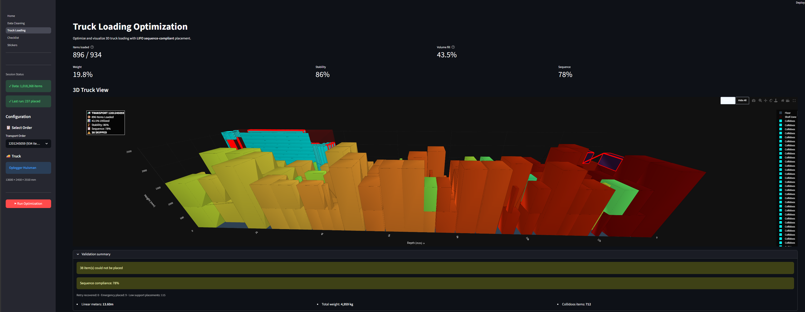
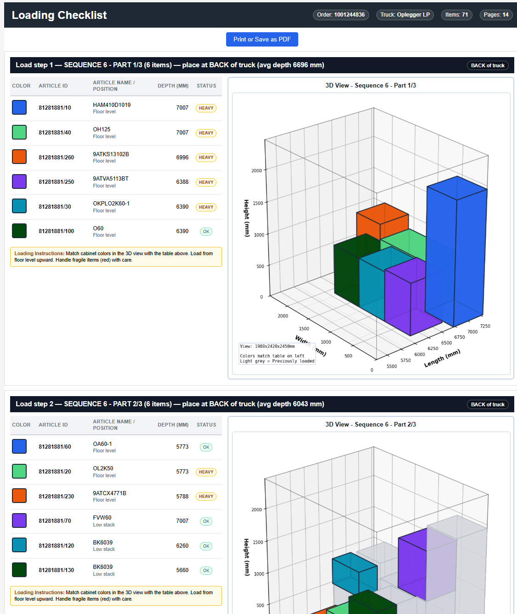
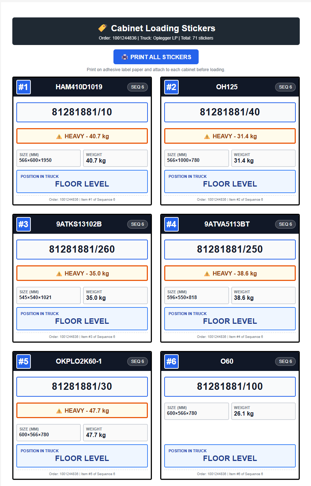
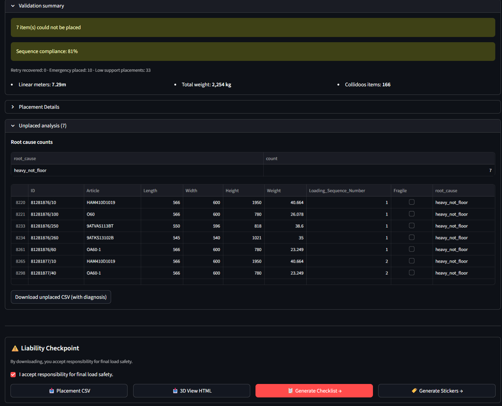

Studium przypadku optymalizacji załadunku dla De Keuken Groep. Cztery miesiące, pięcioro studentów, trzy odrzucone podejścia, jedno wdrożenie produkcyjne — a najważniejszą częścią okazała się droga przez jakość danych, ważniejsza niż którykolwiek z algorytmów.
De Keuken Groep to holenderski producent kuchni. Dziennie ładuje około czterdziestu ciężarówek gotowymi szafkami — ciężkimi i delikatnymi — w kolejności dostaw tak, by zamówienie ostatniego klienta nie znalazło się za pierwszym. Proces był w pełni ręczny, bez systematycznego planu, audytu ani rejestru tego, czy magazyn przestrzegał zasad delikatności i rozkładu ciężaru. Oczekiwanie: narzędzie optymalizacyjne, które zaproponuje załadunek bez kompromisów w kwestii bezpieczeństwa.
Ograniczeń szybko przybywało. Kolejność LIFO przy dostawie nie podlega negocjacjom. Elementy cięższe niż 23 kg nie mogą leżeć na lżejszych (holenderskie przepisy ARBO). Elementy delikatne nie mogą przenosić obciążenia. Maksymalna wysokość stosu to 2,0 m, by umożliwić bezpieczny rozładunek ręczny. Sześć typów ciężarówek, sześć różnych geometrii. A do tego zbiór danych, którego pierwsza wersja miała jakość 52/100 — z brakującymi 91 % wartości długości (Length).
To tutaj naprawdę zaczął się projekt. Nie od kodu — od danych.
Przez pierwsze sześć tygodni towarzyszył nam problem, którego nikt nie chciał wypowiedzieć na głos: nie byliśmy w stanie zbudować niczego sensownego. Propozycja z października obiecywała zaawansowany algorytm pakowania 3D zintegrowany z SAP. Zbiór danych z początku października mówił co innego — jakość 52/100, brak długości (Length) w 90,92 % rekordów, brak szerokości (Width) w 71,28 % i wysokości (Height) w 65,95 %. Komplet trzech wymiarów miało zaledwie 25 % rekordów. Reszta to luki.
Pierwszy raport jakości danych (Data Quality Report) napisałem 7 października. Reakcja zespołu: „ten zbiór danych nie jest najlepszy”. Drugi powstał miesiąc później. Było lepiej — 88,9 % kompletności — ale pojawiło się 121 576 rekordów z długością równą dokładnie zero. Szafka nie może mieć zerowej długości. Zamieniliśmy jeden problem na drugi.
Przy trzecim zbiorze danych mieliśmy już strategię awaryjną. Pięć kolumn wymiarowych zamiast trzech — gdy brakowało długości (Length), system sięgał po głębokość (Depth) 227 427 razy, a po grubość (Thickness) zamiast szerokości (Width) 50 788 razy. Gdy i to zawodziło, model Random Forest uzupełniał wartości na podstawie skorelowanych cech.
Trzeci raport zamknął tę pętlę. Jakość produkcyjna 95,8/100. 99,5 % rekordów z trzema użytecznymi wymiarami. 47 dni, trzy iteracje, jeden uporządkowany zbiór danych.
To była jedyna faza, w której wiedzieliśmy, co robimy.
Na początku listopada pojawił się drugi problem: źle zrozumieliśmy samo pytanie. Tygodniami trenowaliśmy sieci rekurencyjne (RNN), by przewidywały kolejność załadunku. LSTM i pozostałe modele — w nadziei, że sieć nauczy się wzorców wypracowanych przez doświadczonych pracowników magazynu.
Wyniki rozczarowały. Błąd MAE dla LSTM wyniósł 5,52 wobec 5,84 dla losowego punktu odniesienia. Model niczego się właściwie nie nauczył.
Zwrot nastąpił 4 listopada: DKG zna kolejność załadunku — wynika ona z trasy. Ostatni klient na trasie ładowany jest jako pierwszy. Niewiadomą nie była sekwencja, lecz rozmieszczenie.
Porzuciliśmy uczenie głębokie. Prawdziwym problemem było pakowanie 3D (3D bin packing).
Miesiąc prób, które nie przyniosły rezultatu.
Google OR-Tools — programowanie z ograniczeniami. Każde ograniczenie zakodowane, solver przeszukuje przestrzeń rozwiązań. Dla pięćdziesięciu pozycji oznaczało to tysiące zmiennych boolowskich i dziesiątki tysięcy klauzul. Przy ośmiu wątkach i dziesięciominutowych limitach czasu solver zwracał rozwiązania z szafkami zawieszonymi „w powietrzu”. Latające kuchnie. Fizycznie niemożliwe ułożenia. Udokumentowaliśmy to jako spektakularną porażkę i poszliśmy dalej.
Uczenie przez wzmacnianie — ciężarówka jako trójwymiarowa siatka, agent uczy się poprzez nagrody. W trzeciej iteracji: 45,7 % wykorzystania objętości, 886 z 941 pozycji, wielowarstwowe stosy bez jawnego programowania reguł. Ale trening trwał godzinami na iterację, a probabilistyczna natura RL sprawia, że nie da się zagwarantować przestrzegania zasad delikatności ani LIFO przy każdym zamówieniu. Agent nauczył się bezpieczeństwa jako tendencji, a nie jako twardej reguły.
Deepest-Bottom-Left-Fill — zbudowane na samym końcu. Sortowanie według sekwencji (najwyższy numer najgłębiej), następnie według wagi, a potem objętości. Każda pozycja umieszczana zachłannie w najgłębszym, najniższym i najbardziej wysuniętym w lewo dopuszczalnym miejscu. Twarde ograniczenia działają jak filtry, a nie kary — naruszenie oznacza odrzucenie. Pełen determinizm: identyczne dane wejściowe dają identyczny wynik. Poniżej minuty na tysiąc pozycji. Zgodność z regułami gwarantowana już na poziomie konstrukcji.
DBLF wygrało nie dlatego, że było najmądrzejsze. W obszarze twardych reguł fizycznych — przepisy ARBO, delikatność, LIFO — gwarancje są ważniejsze niż gęstość upakowania. Ciężarówka załadowana w 45 % z okazjonalnie stłuczoną szybą jest gorsza niż załadowana w 33 %, która nigdy nie powoduje takiej szkody.

W połowie listopada pokazaliśmy Jeroenowi z DKG interaktywny dashboard 3D. Obracanie ciężarówki, przybliżanie, kliknięcie w szafkę otwierające jej metadane. Byliśmy dumni. Reakcja Jeroena zmieściła się w kilku słowach — zbyt krótkich, by je złagodzić.
Wyjaśnił: pracownicy ekspedycji — z ciężkimi szafkami w rękach i zabrudzonymi dłońmi — nie będą obracać modeli 3D na tablecie. Potrzebują planu na papierze, czytanego wiersz po wierszu.
Zwrot w ciągu tygodnia. Nowy produkt: lista kontrolna w formacie PDF, w orientacji poziomej, sześć pozycji na stronę, próbki kolorów obok miniatury 3D, oznaczenia FRAGILE — delikatne (czerwone) i HEAVY — ciężkie (>30 kg). Naklejka na szafkę zawierała numer artykułu, numer sekwencji, wagę i strzałki THIS SIDE UP. Widok 3D pozostał w biurze. Magazyn dostał papier.
Ta rozmowa zamknęła fazę „algorytmów” i otworzyła fazę „produktu”.


System zwalidowano na 2 230 historycznych zleceniach transportowych obejmujących 1 018 368 pozycji.
Różnica 1,39 % zasługuje na osobne zdanie. To nie porażka algorytmu, lecz koszt gwarantowanej zgodności z regułami. Człowiek może przechylić element, ścisnąć opakowanie czy złamać LIFO, by wcisnąć ostatnią szafkę. Algorytm tego nie zrobi. Wdrożyliśmy wersję, która woli nie stłuc szyby.
Zespół liczył pięć osób. Heurystyka DBLF była dziełem Ashrafa, model RL — Mohameda, rdzeń preprocessingu — Marka. Reszta, mierząc nakładem pracy, należała do mnie.

Wyrafinowanie nie jest wartością samą w sobie. W obszarze twardych ograniczeń „najmądrzejszy” model to ten, który potrafi udowodnić, że nie złamie reguły — a nie ten z najlepszym wynikiem w benchmarku. Rozwiązanie deterministyczne było tym właściwym. Musieliśmy pomylić się trzy razy, żeby to dostrzec.
Druga lekcja jest starsza — pochodzi z sześciu lat pracy na hali: ludzie przy pracy potrzebują jednego zdania, by ocenić, że interfejs jest zły. Jeroenowi wystarczyło kilka słów. Posłuchaliśmy.